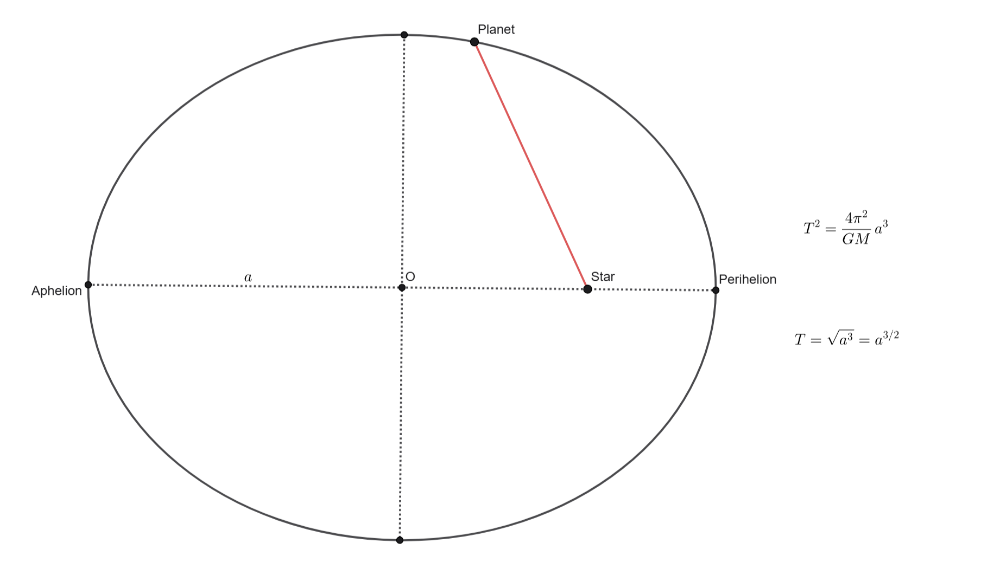
Concept: Use the simplified form of Kepler's Third Law for a system where distances are in Astronomical Units (AU), time is in years, and the central mass is 1 Solar Mass.
Step 1: Recall Kepler's Third Law
The general form is:
$$ T^2 = \frac{4\pi^2}{GM} a^3 $$
Step 2: Simplify the equation
When using Solar System units (\(T\) in Earth years, \(a\) in AU, and \(M = 1 \ M_\odot\)), the constant \(\frac{4\pi^2}{GM}\) simplifies to exactly 1. The equation becomes:
$$ T^2 = a^3 \implies T = \sqrt{a^3} = a^{3/2} $$
Step 3: Calculate the Period
Plug in the given semi-major axis, \(a = 16\) AU:
$$ T = \sqrt{16^3} = \sqrt{4096} = 64 \text{ years} $$
Alternative math trick: \(\sqrt{16^3} = (\sqrt{16})^3 = 4^3 = 64\).
Answer: (c)
Concept: Use the generalized form of Kepler's Third Law. When the semi-major axis is in Astronomical Units (AU) and the period is in Earth years, the formula directly yields the total mass of the system in Solar Masses (\(M_\odot\)).
Step 1: The Generalized Kepler's Third Law
For a binary system, Kepler's Third Law in solar system units (\(a\) in AU, \(P\) in years, \(M\) in solar masses) simplifies beautifully to:
$$ M_{total} = \frac{a^3}{P^2} $$
Step 2: Plug in the values
$$ M_{total} = \frac{0.85^3}{0.285^2} $$
Step 3: Calculate the total mass
$$ 0.85^3 \approx 0.6141 $$
$$ 0.285^2 \approx 0.0812 $$
$$ M_{total} = \frac{0.6141}{0.0812} \approx 7.56 \ M_\odot $$
The closest answer is 7.5 solar masses.
Answer: (c)
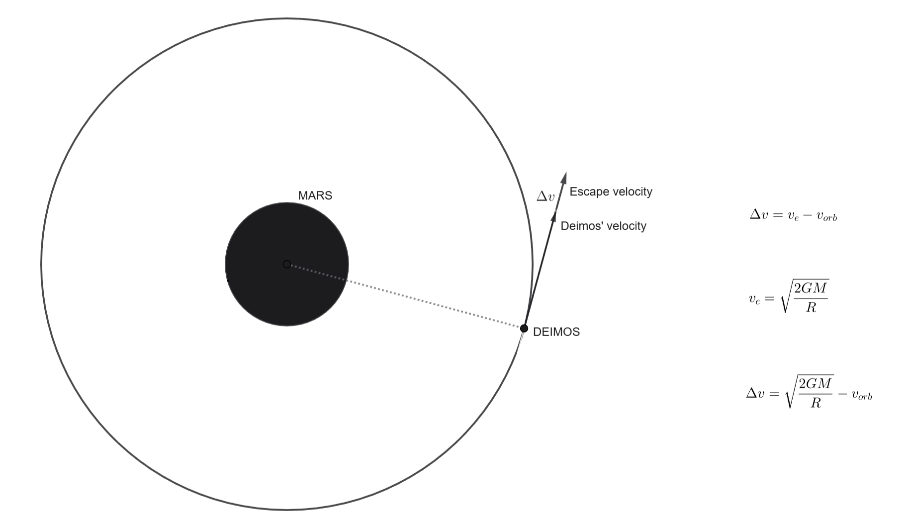
Note: The solution relies on calculating the difference between the required escape velocity and our current orbital velocity.
Step 1: Convert units to SI
Step 2: Calculate Escape Velocity (\(v_e\))
$$ v_e = \sqrt{\frac{2 \cdot (6.674 \times 10^{-11}) \cdot (6.39 \times 10^{23})}{2.346 \times 10^7}} \approx 1.907 \text{ m/s} $$
Step 3: Calculate Delta-V (\(\Delta v\))
$$ \Delta v = 1.907 - 1.350 = 557 \text{ m/s} $$
Answer: (a)
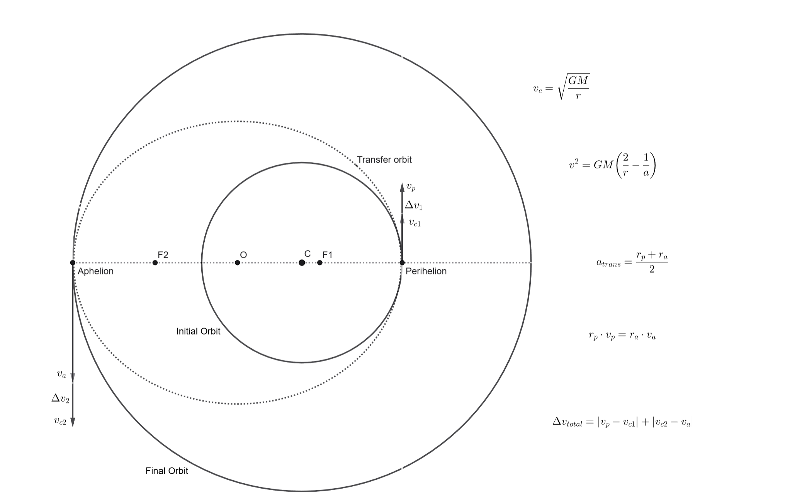
Concept: A Hohmann transfer involves two burns. The first burn moves the spacecraft from the inner circular orbit onto an elliptical transfer orbit. The second burn circularizes the orbit at the destination radius.
Step 1: Identify Orbital Parameters
Step 2: Calculate Circular Velocities
$$ v_{c1} = \sqrt{\frac{GM}{R}}, \quad v_{c2} = \sqrt{\frac{GM}{8R}} = \frac{1}{2\sqrt{2}}\sqrt{\frac{GM}{R}} $$
Step 3: Calculate Transfer Velocities (Vis-Viva Equation)
$$ v_p = \sqrt{GM \left(\frac{2}{R} - \frac{2}{9R}\right)} = \frac{4}{3}\sqrt{\frac{GM}{R}} $$
$$ v_a = \sqrt{GM \left(\frac{2}{8R} - \frac{2}{9R}\right)} = \frac{1}{6}\sqrt{\frac{GM}{R}} $$
Step 4: Calculate Delta-V
$$ \Delta v_1 = v_p - v_{c1} = (\frac{4}{3} - 1)\sqrt{\frac{GM}{R}} = \frac{1}{3}\sqrt{\frac{GM}{R}} $$
$$ \Delta v_2 = v_{c2} - v_a = (\frac{1}{2\sqrt{2}} - \frac{1}{6})\sqrt{\frac{GM}{R}} $$
Step 5: Total K
$$ \Delta v_{total} = \left( \frac{1}{3} - \frac{1}{6} + \frac{1}{2\sqrt{2}} \right) \sqrt{\frac{GM}{R}} \implies k = \frac{1}{6} + \frac{1}{2\sqrt{2}} $$
Answer: (c)
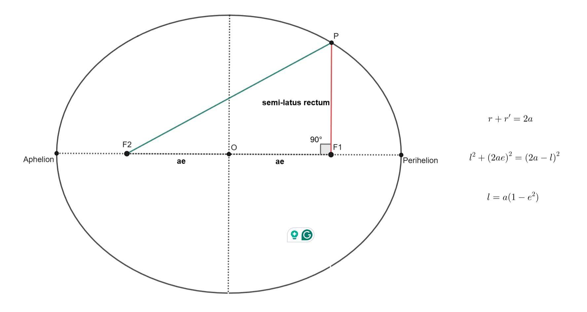
Step 1: Identify Given Info
$$ \frac{l}{a} \approx \frac{1}{100} = 0.01 $$
Step 2: Formula
$$ l = a(1 - e^2) \implies \frac{l}{a} = 1 - e^2 $$
Step 3: Solve for e
$$ 0.01 = 1 - e^2 \implies e^2 = 0.99 \implies e \approx 0.995 $$
Answer: (b)
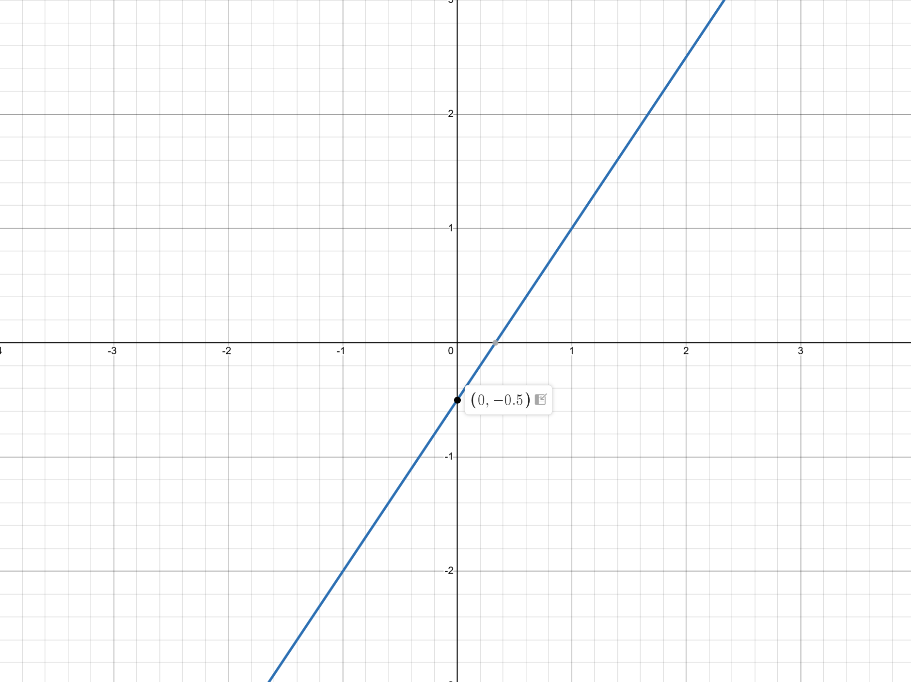
Step 1: Write Kepler's 3rd Law for both systems
$$ T^2 = \frac{4\pi^2}{GM} a^3 \quad \text{and} \quad T_\oplus^2 = \frac{4\pi^2}{GM_\odot} a_\oplus^3 $$
Step 2: Divide the relations
$$ \left(\frac{T}{T_\oplus}\right)^2 = \left(\frac{M_\odot}{M}\right) \left(\frac{a}{a_\oplus}\right)^3 \implies T^2 = \frac{1}{10} a^3 $$
Step 3: Linearize using Logarithms
$$ \log(T^2) = \log(0.1 \cdot a^3) \implies 2\log T = -1 + 3\log a $$
$$ \log T = \frac{3}{2}\log a - \frac{1}{2} $$
Answers:
11. (b)
12. (c)
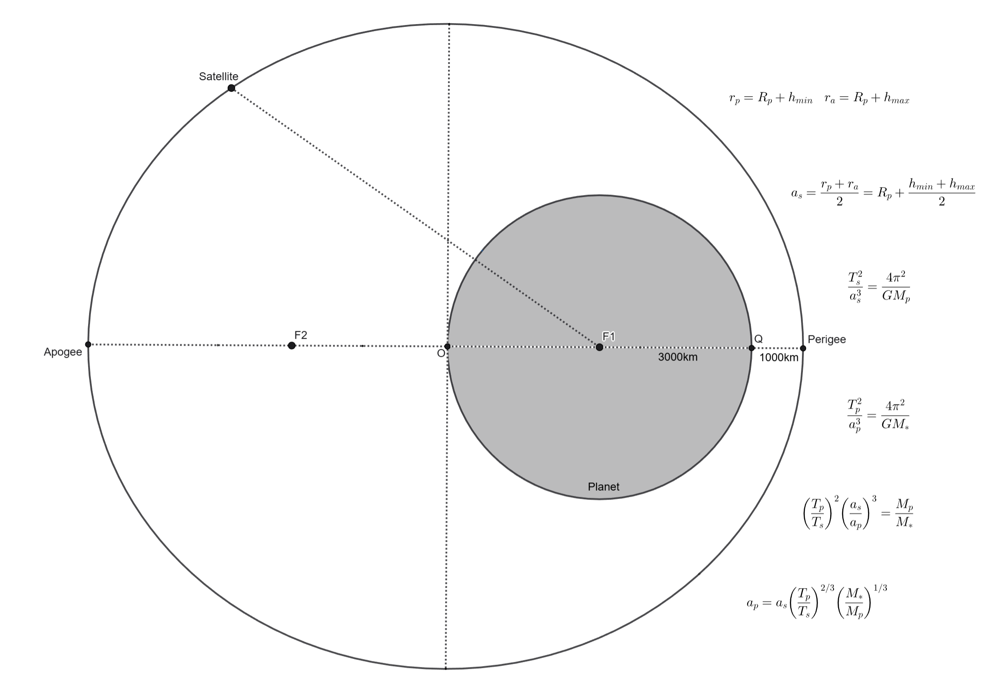
Step 1: Calculate satellite semi-major axis
$$ a_s = \frac{(3000+1000) + (3000+7000)}{2} = 7000 \text{ km} $$
Step 2: Create a ratio to eliminate constants
$$ \left( \frac{T_p}{T_s} \right)^2 \cdot \left( \frac{a_s}{a_p} \right)^3 = \frac{M_p}{M_*} $$
$$ a_p = a_s \cdot \left( \frac{T_p}{T_s} \right)^{2/3} \cdot \left( \frac{M_*}{M_p} \right)^{1/3} $$
Step 3: Calculate
$$ a_p = 7000 \cdot \left(\frac{129600}{100}\right)^{2/3} \cdot (10^5)^{1/3} \approx 3.86 \times 10^7 \text{ km} $$
Answer: (e)
Statement I: CAN be inferred. (Kepler's First Law)
Statement II: CANNOT be inferred. (Kepler's laws do not restrict eccentricity values, they just say the shape is an ellipse).
Statement III: CAN be inferred. (Kepler's Second Law - Equal Areas).
Statement IV: CANNOT be inferred. (Kepler's laws apply independently to each planet, they don't dictate that all planets must share the same plane).
Answer: (d)
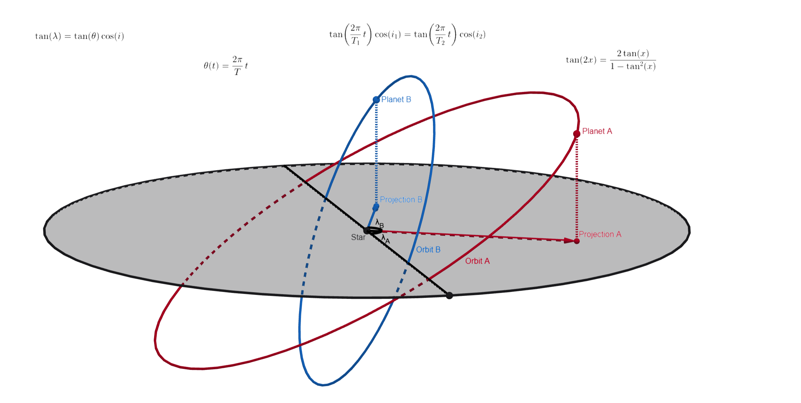
Concept: Ecliptic longitude (\(\lambda\)) is the projection of the planet's orbital angle (\(\theta\)) onto the reference plane. The relationship is governed by the orbital inclination (\(i\)).
Step 1: The Projection Equation
From spherical trigonometry, the ecliptic longitude \(\lambda\) is related to the true anomaly (angle on orbit) \(\theta\) by:
$$ \tan(\lambda) = \tan(\theta) \cos(i) $$
Step 2: Angles as a function of time
Since the orbits are circular, \(\theta(t) = \frac{2\pi}{T} t\). Let \(t\) be the time in years.
Step 3: Equate the Ecliptic Longitudes
We want \(\lambda_1 = \lambda_2\), which means \(\tan(\lambda_1) = \tan(\lambda_2)\):
$$ \tan(\theta_1) \cos(30^\circ) = \tan(2\theta_1) \cos(70^\circ) $$
Step 4: Solve the Trigonometric Equation
Using the double angle identity \( \tan(2x) = \frac{2\tan(x)}{1 - \tan^2(x)} \) and letting \( x = \theta_1 \):
$$ \tan(x) \cos(30^\circ) = \frac{2\tan(x)}{1 - \tan^2(x)} \cos(70^\circ) $$
Assuming \(t > 0\) (so \(\tan(x) \neq 0\)), we can divide by \(\tan(x)\):
$$ \cos(30^\circ) = \frac{2\cos(70^\circ)}{1 - \tan^2(x)} \implies 1 - \tan^2(x) = \frac{2\cos(70^\circ)}{\cos(30^\circ)} $$
$$ \tan^2(x) = 1 - \frac{2 \cdot 0.3420}{0.8660} \approx 1 - 0.7898 = 0.2102 $$
$$ \tan(x) \approx \sqrt{0.2102} \approx 0.4585 \implies x \approx 0.4299 \text{ rad} $$
Step 5: Convert back to time
Since \( x = \pi t \):
$$ t = \frac{0.4299}{\pi} \approx 0.1368 \text{ years} $$
Convert years to days (using 365.25 days/year):
$$ 0.1368 \times 365.25 \approx 49.97 \text{ days} \approx 50 \text{ days} $$
Answer: (e)
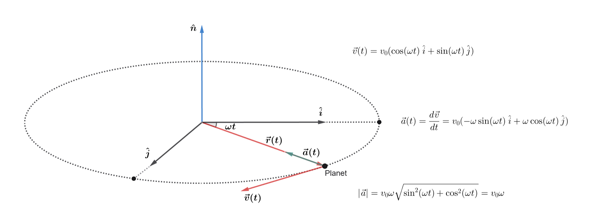
Concept: Using basic vector calculus, we can find the acceleration vector and then evaluate each statement individually.
First, let's explicitly calculate the acceleration vector \(\vec{a}(t)\) by taking the time derivative of the velocity vector \(\vec{v}(t)\):
$$ \vec{a}(t) = \frac{d\vec{v}}{dt} = v_0(-\omega\sin(\omega t)\hat{i} + \omega\cos(\omega t)\hat{j}) $$
Evaluating the Statements:
(a) Incorrect. In uniform circular motion, acceleration is centripetal (pointing towards the center) and velocity is tangential to the orbit. Therefore, they are always perpendicular, not parallel.
(b) Correct. Let's verify both claims in this statement:
1. Magnitude: Using the trigonometric identity \(\sin^2(\theta) + \cos^2(\theta) = 1\), the magnitude is:
$$ |\vec{a}| = \sqrt{(-v_0\omega\sin(\omega t))^2 + (v_0\omega\cos(\omega t))^2} = v_0\omega \sqrt{\sin^2(\omega t) + \cos^2(\omega t)} = v_0\omega $$
2. Perpendicularity: If they are perpendicular, their dot product must be zero:
$$ \vec{v} \cdot \vec{a} = (v_0\cos(\omega t))(-v_0\omega\sin(\omega t)) + (v_0\sin(\omega t))(v_0\omega\cos(\omega t)) $$
$$ \vec{v} \cdot \vec{a} = -v_0^2\omega\cos(\omega t)\sin(\omega t) + v_0^2\omega\sin(\omega t)\cos(\omega t) = 0 $$
Both conditions are met perfectly.
(c) Incorrect. Although the speed (the magnitude of the velocity vector, \(v_0\)) is constant, the direction of the velocity vector is constantly changing as the planet moves around the circle. Any change in a vector's direction requires a non-zero acceleration.
(d) Incorrect. As proven in statement (b), since \(\vec{v}\) and \(\vec{a}\) are perpendicular, their dot product \(\vec{v} \cdot \vec{a}\) is exactly \(0\), not \(v_0^2\omega\).
(e) Incorrect. The acceleration vector \(\vec{a}(t)\) lies entirely within the orbital plane (it only has \(\hat{i}\) and \(\hat{j}\) components). The vector \(\hat{n}\) is defined as being perpendicular to the orbital plane. Therefore, \(\vec{a}\) is perpendicular to \(\hat{n}\), not parallel to it.
Answer: (b)
Concept: Let's evaluate each statement using the fundamental principles of celestial mechanics.
(a) Incorrect. According to Kepler's Second Law (or the conservation of angular momentum, \(L = mvr\)), the orbital speed is maximized when the radius is minimized. Therefore, speed is maximized at perihelion (closest approach), not aphelion.
(b) Incorrect. A planet only moves in a perfect circle if the eccentricity is exactly zero (\(e = 0\)). For any value \(0 < e < 1\), the orbit is an ellipse.
(c) Incorrect. Kepler's Third Law states that the square of the orbital period is proportional to the cube of the semi-major axis (\(T^2 \propto a^3\)). The period does not depend on the eccentricity of the orbit.
(d) Correct. The Roche limit distance (\(d\))—the distance within which a celestial body will disintegrate due to a second body's tidal forces—is approximated by \( d \approx 2.44 R_M \left(\frac{\rho_M}{\rho_m}\right)^{1/3} \), where \(\rho_m\) is the density of the satellite (the planet). Since \(\rho_m\) is in the denominator, a decrease in the planet's density results in a larger Roche limit.
(e) Incorrect. Only two of the five Lagrange points (\(L_4\) and \(L_5\)) correspond to stable equilibria (stable against small perturbations). The collinear points (\(L_1, L_2, L_3\)) are unstable equilibria.
Answer: (d)
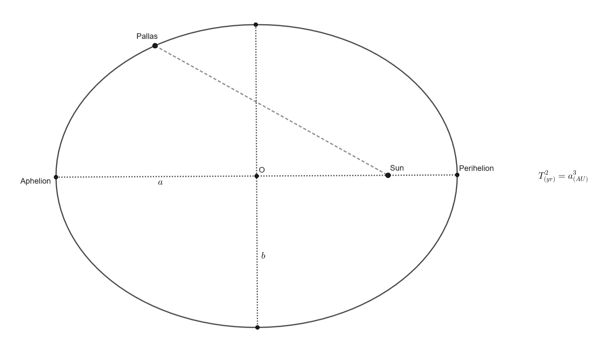
Concept: We use Kepler's Third Law of Planetary Motion, simplified for objects orbiting the Sun.
Step 1: Recall Kepler's Third Law
The general form of Kepler's Third Law is:
$$ T^2 = \frac{4\pi^2}{GM} a^3 $$
Step 2: Use Solar System Units
When studying objects orbiting the Sun, it is extremely convenient to measure the orbital period (\(T\)) in Earth years and the semi-major axis (\(a\)) in Astronomical Units (AU). By doing this, the massive constant \(\frac{4\pi^2}{GM_\odot}\) simply becomes \(1\).
The equation simplifies elegantly to:
$$ T^2 = a^3 $$
Step 3: Calculate the Period
We are given the semi-major axis \( a = 2.77 \) AU. We need to isolate \(T\):
$$ T = \sqrt{a^3} = a^{3/2} $$
Substitute the given value for \(a\):
$$ T = (2.77)^{3/2} \text{ years} $$
Answer: (b)
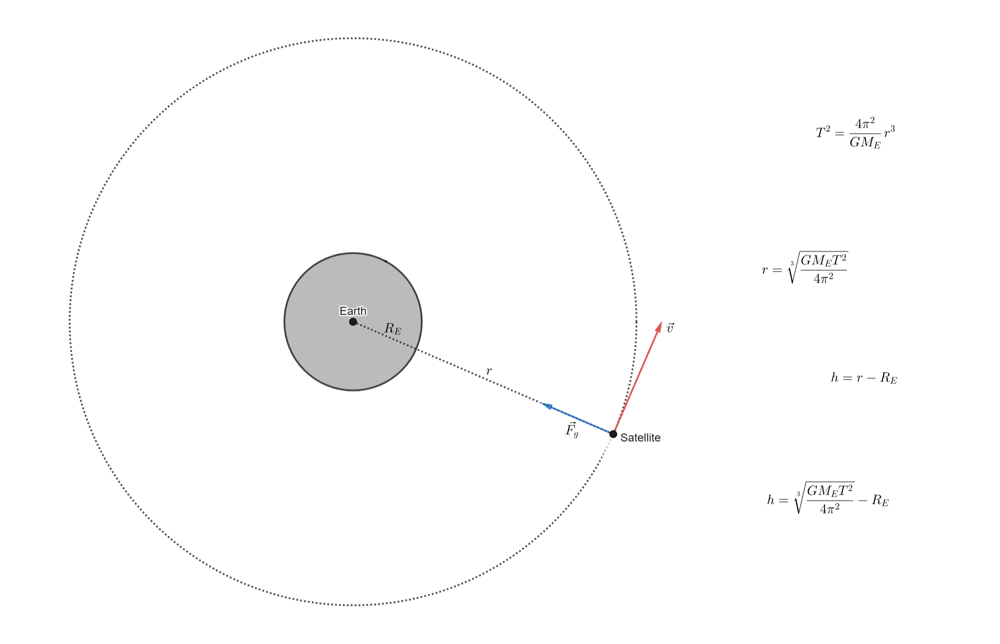
Concept: A satellite that stays above a fixed point on the equator is in a geostationary orbit. Its orbital period matches Earth's sidereal rotation period.
Step 1: Use Kepler's Third Law to find the orbital radius (\(r\))
The relationship between period \(T\) and radius \(r\) is:
$$ T^2 = \frac{4\pi^2}{GM_E} r^3 \implies r = \sqrt[3]{\frac{GM_ET^2}{4\pi^2}} $$
Plug in the constants:
$$ r = \sqrt[3]{\frac{(6.674 \times 10^{-11}) \cdot (5.97 \times 10^{24}) \cdot (86164)^2}{4\pi^2}} $$
$$ r \approx \sqrt[3]{7.497 \times 10^{22}} \approx 42,226,000 \text{ m} = 4.22 \times 10^7 \text{ m} $$
Step 2: Calculate the altitude (\(h\))
The question specifically asks for the distance from the surface. This is the orbital radius minus Earth's radius (\(R_E\)):
$$ h = r - R_E $$
$$ h = 42,226,000 - 6,370,000 = 35,856,000 \text{ m} $$
$$ h \approx 3.58 \times 10^7 \text{ m} $$
Answer: (d)
Concept: Use Kepler's Third Law and the binomial approximation to find the small change in period (\(\Delta T\)) caused by a small change in the semi-major axis (\(\Delta a\)). Note: The mass of the Moon is a distractor.
Step 1: Relate Period and Semi-major Axis
From Kepler's Third Law, \(T^2 \propto a^3\), which means \(T = C \cdot a^{3/2}\) (where \(C\) is a constant).
Step 2: Apply the small change (\(\Delta a\))
If the semi-major axis increases by \(\Delta a\), the new period is:
$$ T + \Delta T = C(a + \Delta a)^{3/2} = C \cdot a^{3/2} \left(1 + \frac{\Delta a}{a}\right)^{3/2} $$
Step 3: Use the Binomial Approximation
Since \(\Delta a\) is extremely small compared to \(a\), let \(x = \frac{\Delta a}{a}\) and \(\beta = \frac{3}{2}\). Using the hint:
$$ T + \Delta T \approx T \left(1 + \frac{3}{2}\frac{\Delta a}{a}\right) = T + \frac{3}{2}T\frac{\Delta a}{a} $$
Subtracting \(T\) from both sides leaves us with the formula for the change in period:
$$ \Delta T = \frac{3}{2} T \frac{\Delta a}{a} $$
Step 4: Plug in standard Lunar constants
$$ \Delta T = 1.5 \cdot (2.36 \times 10^6) \cdot \frac{0.038}{3.84 \times 10^8} $$
$$ \Delta T \approx 3.5 \times 10^6 \cdot 10^{-10} = 3.5 \times 10^{-4} \text{ s} = 350 \ \mu\text{s} $$
Answer: (b)
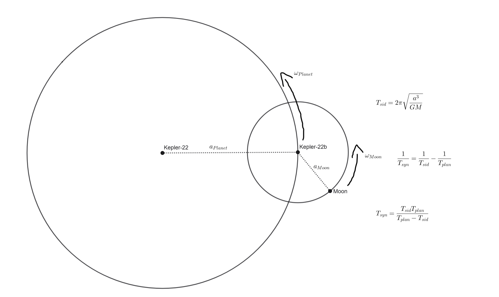
Concept: First, find the sidereal period of the moon using Kepler's Third Law. Then, use the synodic period formula for a prograde orbit to find the time between full moons.
Step 1: Find the Sidereal Period of the Moon (\(T_{sid}\))
$$ T_{sid} = 2\pi \sqrt{\frac{a^3}{GM}} $$
$$ T_{sid} = 2\pi \sqrt{\frac{(7.70 \times 10^8)^3}{(6.674 \times 10^{-11}) \times (4.84 \times 10^{25})}} \approx 2,361,860 \text{ s} $$
Convert this into days (divide by \(86400\)):
$$ T_{sid} \approx 27.336 \text{ days} $$
Step 2: Calculate the Synodic Period (\(T_{syn}\))
For a prograde orbit, the moon must complete slightly more than one full 360° orbit to catch up to the "full moon" phase because the planet has moved along its orbit around the star. The formula is:
$$ \frac{1}{T_{syn}} = \frac{1}{T_{sid}} - \frac{1}{T_{plan}} \implies T_{syn} = \frac{T_{sid} T_{plan}}{T_{plan} - T_{sid}} $$
Plug in \( T_{plan} = 290 \text{ days} \) and \( T_{sid} = 27.336 \text{ days} \):
$$ T_{syn} = \frac{27.336 \times 290}{290 - 27.336} = \frac{7927.44}{262.664} \approx 30.18 \text{ days} $$
Answer: (d)
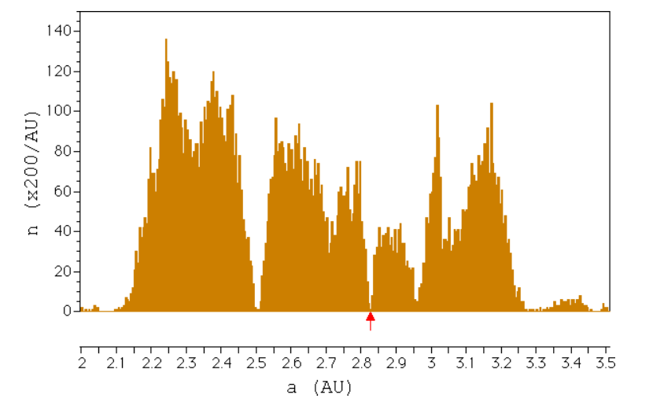
Concept: Orbital resonance occurs when the ratio of two bodies' orbital periods is a simple fraction of integers. We can use Kepler's Third Law to find this ratio based on their semi-major axes.
Step 1: Read the semi-major axis from the graph
Looking closely at the \(x\)-axis, the red arrow points to a gap just past 2.8 AU. A safe estimate is \( a_{ast} \approx 2.82 \) AU.
Step 2: Apply Kepler's Third Law
Kepler's Third Law states that \(T^2 \propto a^3\). Therefore, the ratio of Jupiter's period (\(T_J\)) to the asteroid's period (\(T_{ast}\)) is:
$$ \left(\frac{T_J}{T_{ast}}\right)^2 = \left(\frac{a_J}{a_{ast}}\right)^3 \implies \frac{T_J}{T_{ast}} = \left(\frac{a_J}{a_{ast}}\right)^{3/2} $$
Step 3: Calculate the Resonance Ratio
Substitute Jupiter's semi-major axis (\(5.20\) AU) and our estimated asteroid semi-major axis (\(2.82\) AU):
$$ \frac{T_J}{T_{ast}} = \left(\frac{5.20}{2.82}\right)^{1.5} \approx (1.844)^{1.5} \approx 2.50 $$
Step 4: Convert to a fraction
A ratio of \(2.5\) is equivalent to \(\frac{5}{2}\). This means the asteroid completes exactly 5 orbits for every 2 orbits Jupiter makes. This is a 5:2 mean-motion resonance.
Answer: (d)
New to the platform? Register